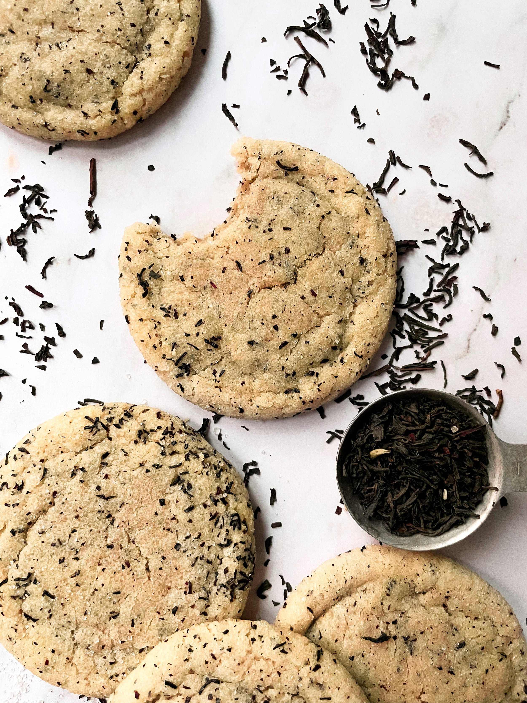

Tea Sugar Cookies

Simple and Satisfying Year-Round
This sugar cookie recipe is perfectly customizable for every occasion. It's a great option during the holidays, but you can easily swap out any kind of tea you'd like to suit any season or occasion.
I prefer to make these cookies with Earl Grey tea, but I know chai is an extremely popular option. I think most teas would work well, but you should be aware of flavor pairings. I also prefer to use loose leaf tea, but if you're more of a bagged tea person that works well too!
Ingredients
- 1/2 cup butter, room temperature
- 1/2 cup vegetable oil
- 1/2 cup sugar
- 1/2 cup powdered sugar
- 2 teaspoons tea
- 1 large egg
- 2 teaspoons vanilla
- 2 cups all-purpose flour
- 3/4 teaspoon baking soda
- 1/2 teaspoon salt
Steps
- Preheat oven to 350 degrees F. Line baking sheet with parchment paper.
- Beat butter on medium speed for ~1 minute.
- Add vegetable oil. Add sugar, powdered sugar, and tea. Beat to combine.
- Add egg and vanilla, beat on medium until completely incorporated.
- Stir in flour, baking soda, and salt.
- Refrigerate for 1 hour or freeze 15 minutes.
- Dollop 1 or 2 tablespoon portion cookies onto sheet.
- Bake 12 to 14 minutes for larger cookies or 8 to 10 minutes for smaller cookies.
- Let cookies cool 10 minutes and then transfer to wire rack.
Optional: Add Glaze
Ingredients
- 1 1/2 cups powdered sugar
- 1/4 teaspoon nutmeg
- 3 tablespoons whole milk (optional: steep tea in milk overnight)
Steps
- Whisk together glaze ingredients.